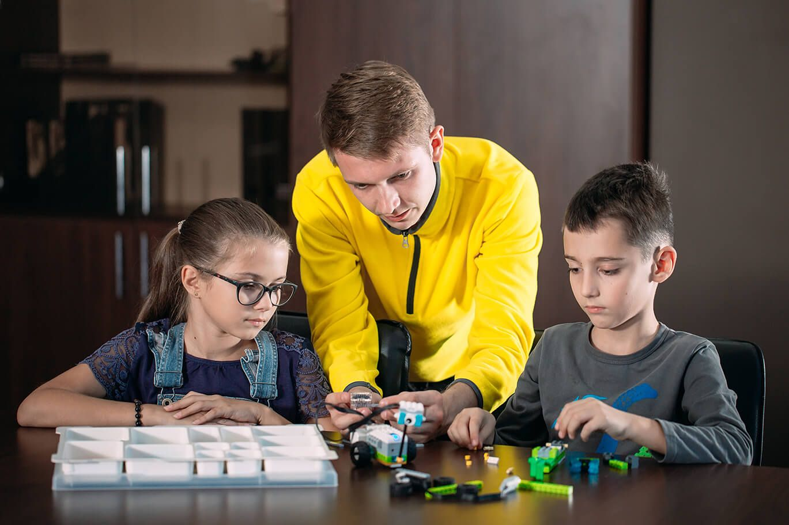

Hello Everyone, I thought of writing a small article to raise awareness of the importance of robotics education in this difficult times where most of you might be working or studying from home or you might be going to school and your studies might have been interrupted by now. The year 2020 has turned out to be a year like never before where we had to change and adapt everything that we have been used to do in the past. So, without further a due, Let’s dive into the field of robotics.
Most of us got to know about the concepts of a robot from the famous “Transformers” movie. We know how powerful the “Optimus Prime” is. We all love the “Bumblebee”. Coming over to my favorite the robot “Wall-E” which is helping the world to recycle the waste. But when it comes to the real-world robotics it might be quite different. As Wikipedia defines,
“Robotics involves design, construction, operation, and use of robots. Robotics develops machines that can substitute for humans and replicate human actions.”
In a nutshell, robots are designed to help humans and to automate repetitive human tasks.
Robotics and automation is one of the emerging fields which has a lot of potential in the future. With the growing uncertainty of things in the world, people have realized the value of automation and utilizing the human resources in the most efficient way. Therefore, learning about robotics is a wonderful investment for the future. I think now we are in the same page about the importance of robotics education.
The most common question that you might think right now would be whether robotics is for me or will this article would help me? This article can be helpful for you even if you are parent who is looking for what suits the best for your child or if you are an university student who is trying to find your passion or even if you are still pursuing your school studies who wants to learn something new outside from the school curriculum. Also, this article can help investors or even the government in identifying the importance of robotics education for the young generation who will lead our mother nation for the next technology revolution.
Getting back to the childhood we know how we used to play with sand, smell the fresh air, see the horizon and be amazed by the beauty of nature, make clay castles and etc. Kids like to play with tangible things, things that they can touch, feel and react. But when we came to school we had to read, write and face exams. We used far more less practical experience in the things we learned. Exams defined our results not the applications. But as many research studies have found that the most effective learning comes through engaging all the senses in the learning process starting from watching, listening, writing, teaching and most importantly applying it.
The most amazing fact is that learning robotics stimulate all of these senses in order to learn effectively while providing kids something tangible to work with. This learning procedure is systemized as “STEAM” education which is the new normal of education that is to use Science and Technology interpreted through Engineering and Arts based on Mathematics. That's why Robotics is proven to be one of the best ways to teach “STEAM” education-based learning.
Robotics is a multi-disciplinary field which combines the expertise in the field of Electronics, Computer Science and Mechanics. Therefore, it’s not just about a single field of interest but more about how different people from different disciplines get together and work for a common goal. This particular quality has been able to develop teamwork and leadership skills in individuals who learn robotics.

There are plenty of more personal benefits in learning robotics as well. Even in Sri Lanka, there are plenty of robotics competitions organized by many Universities which you can participate in school, undergraduate and open categories. Participating in these competitions will help you to build several life skills such as working hard, dedication, commitment and also to accept failures. Sometimes a small mistake can lead to lose in the final round in a competition which might be frustrating for a moment but later you learn the lesson. An interesting fact is that robotics competitions can also be seen as a new kind of sport. Also, students can gain more international exposure by participate in international robotics competitions as well. As mentioned at the beginning of the article, robots are used to automate human tasks which is to solve practical problems. Therefore, by learning robotics students can practice solving real world problems with their infinite creativity and imagination that they already poses.
Moving on to the future it’s pretty sure that the world will move towards to cut down labour intensive tasks and assign them to robots. Human resources will be used for far more valuable decision making and innovative things. Most of the labour-intensive jobs might get replaced by robots. There will be millions of new job opportunities because of this technology change. But still, no robot has been developed to outperform the thinking ability of humans. Therefore, there are always opportunities for those who are creative and innovative. Also, a funny fact is that, if you are the one who develops robots you won’t be replaced at all.
I know now you are really enthusiastic to learn or share this with someone you love. There are cutting-edge technologies involved in the field of robotics. Earlier, robots are used in manufacturing under heavy safety measures in operating areas. But, the new era of robotics is to develop robots that can work in human centered environments. Legged robots, robot hands and many more are developed to look like humans and work like humans to be more friendly to us. Most of the major countries like China, USA, Switzerland and Japan are pioneers in robotics at the moment.
Coming to the end of the article, I would like to humbly share what we do for the betterment of robotics education in Sri Lanka. We as “CircuitBreakers Robotics”; a startup initiated by robotics enthusiasts who are currently undergraduates of University of Moratuwa we have a vision to empower robotics education in Sri Lankan by providing related services and free education. We believe that robotics education should be available for every single person in Sri Lanka as we had the privilege of public education from the school to the university. The problem is that robotics is not directly included in our school curriculum and the knowledge is not out there with proper quality. We are on our way to create the first ever robotics platform for Sri Lankans and recently, we have launched our facebook community called “CircuitBreakers Robotics Community” where any individual can ask their questions and get answers from the experts.
Finally, I invite all the readers to join with us to help us through this great journey. Thank you! Happy time building robots ;-)